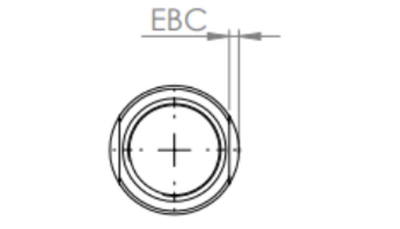

Ordem de Produção – HASTES
N° Doc: OP-001
Página: 1 de 3
Rev: 1


OPERAÇÃO 1: CORTE Tolerância (mm): -0 / +2
| Medida Corte | Ø Haste | Responsável | Aprovado | Observações |
|---|---|---|---|---|
|
|
OPERAÇÃO 1: CORTE Tolerância (mm): -0 / +2
| Medida Corte | Ø Haste | Responsável | Aprovado | Observações |
|---|---|---|---|---|
OPERAÇÃO 2: Rosca dianteira RD X CRD
| Medida | Responsável | Aprovado | Observações |
|---|---|---|---|
|
|
OPERAÇÃO 2: Rosca dianteira RD X CRD
| Medida | Responsável | Aprovado | Observações |
|---|---|---|---|
OPERAÇÃO 2.5: MEDIDAS EXTRAS
| Operação | Medida | Nome/Aprovação |
|---|---|---|
| Rebaixo traseira (ØX e X) | ||
| rebaixo oring (ØZ e Z) | ||
| distância rebaixo oring (Y) |
OPERAÇÃO 1: CORTE Tolerância (mm): -0 / +2
| Medida Corte | Ø Haste | Responsável | Aprovado | Observações |
|---|---|---|---|---|
OPERAÇÃO 2: Rosca dianteira RD X CRD
| Medida | Responsável | Aprovado | Observações |
|---|---|---|---|
OPERAÇÃO 3: Rosca traseira RT X CRT
| Medida | Responsável | Aprovado | Observações |
|---|---|---|---|
OPERAÇÃO 3: Rosca traseira RT X CRT
| Medida | Responsável | Aprovado | Observações |
|---|---|---|---|
OPERAÇÃO 4: BOCA DE CHAVE
| EBC | CBC | ØR | CR | Responsável | Aprovado | Observações |
|---|---|---|---|---|---|---|
INFORMAÇÃO PARA CCB
| Facear Êmbolo | Aprovado | Observações |
|---|---|---|
OPERAÇÃO 5: ACABAMENTO
| Operação | Ferramenta | Avaliação |
|---|---|---|
| Retirar rebarbas na haste | Escova de aço / Estilete | |
| Oxidação negra na rosca dianteira | Oxiblack | |
| Limpar rosca traseira | Limpador | |
| Conferir medida final da haste | Paquímetro / Trena |